Bihonda
Nos conocimos en 2022 en Proyectos Interdisciplinarios 2. Ella era mi mentora de Programación 2 y, por mí, terminó cambiándose de carrera. Hoy es la amistad que más valoro.
El balance de la vida
Estudio Ciencia de Datos en UTEC, corro 400 metros con vallas para la selección peruana y trabajo como practicante de proyectos de tecnología en Hochschild Mining. Este es mi CV, contado en tres partes.

Cosas que no aparecen en un CV tradicional. Selecciona un círculo para leerlo; algunos tienen foto.
Empieza por cualquiera.
Parte 1
Mi familia, mis amigos y los viajes que me marcaron.
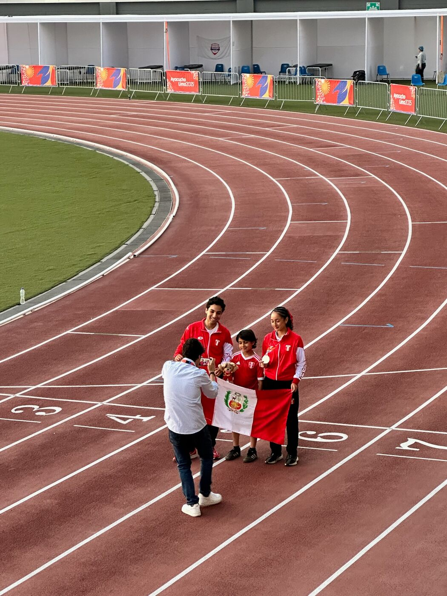
Somos cinco: mis papás, Paola y Dante, mi hermana Daniela, mi hermano menor Dacio y yo, el mayor de los tres.
Mi mamá es ingeniera de sistemas y lleva más de 20 años a cargo del área de tecnología en empresas de hidrocarburos en el Perú. Verla crecer en esa industria fue una de las razones por las que elegí estudiar Ciencia de Datos.
Edades en 2026.

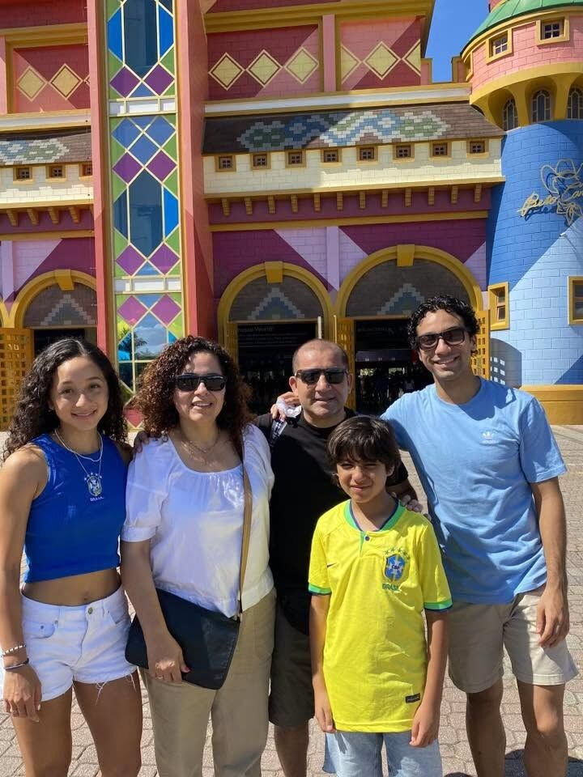
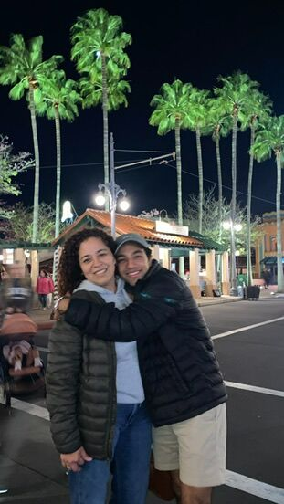


Mi hermana y yo empezamos juntos en el atletismo hace más de diez años. Desde entonces hemos competido a nivel nacional e internacional.
Los dos somos campeones nacionales universitarios y campeones nacionales en nuestras categorías.
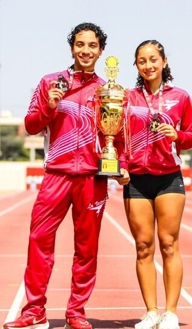


Nací el 25 de noviembre de 2004 en Barranco. Hice inicial, primaria y secundaria en el colegio San Luis Maristas de Barranco, donde:

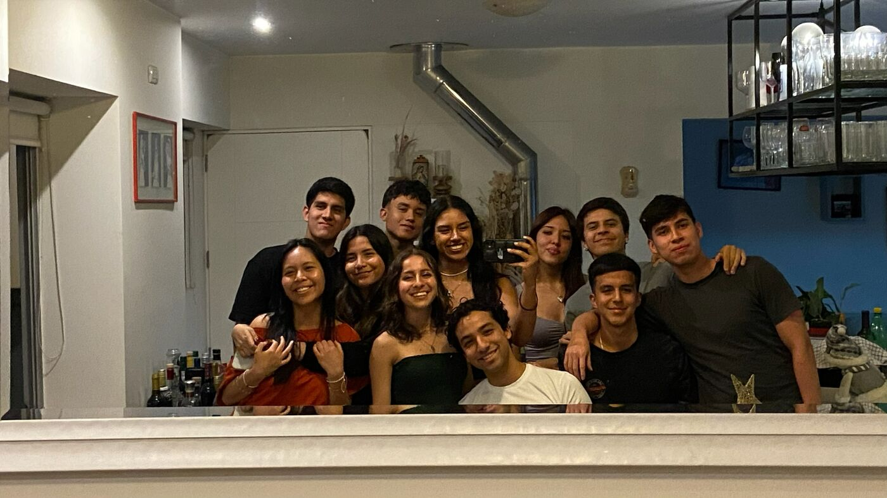
Tengo un grupo pequeño de amigos: los del colegio, los del atletismo y Bihonda.
Nos conocimos en 2022 en Proyectos Interdisciplinarios 2. Ella era mi mentora de Programación 2 y, por mí, terminó cambiándose de carrera. Hoy es la amistad que más valoro.
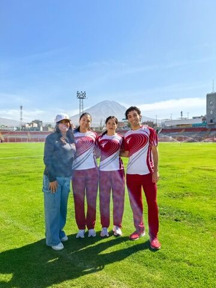
Mis mejores amigas del atletismo. Juntos representamos al Perú en los Juegos Bolivarianos 2025, competimos en los controles de la Federación en Arequipa, entrenamos en el campamento de Tumbes y viajamos a Uruguay.

Amigos del colegio y de la pista que me acompañan desde hace años.
Cinco momentos que cambiaron el rumbo. Selecciona cada uno para leerlo.
Todos salen de Lima. Selecciona un destino en el mapa.
Parte 2
Más de diez años en la pista. Mi prueba son los 400 metros con vallas.

Desde que empecé a los 8 años hasta la meta de Lima 2027. Pasa el cursor sobre cada punto para ver el detalle.
Son 45 metros desde la salida hasta la primera valla. Ahí se define el ritmo de toda la carrera.
Hay diez vallas de 91,4 cm, separadas por 35 metros. La clave es llegar a cada una con el paso contado.
En la segunda curva aparece el cansancio, y mantener la técnica pasa a ser lo más difícil.
Después de la última valla quedan 40 metros hasta la meta.
Mi mejor marca es 54.70, conseguida el 28 de marzo de 2026 en la VIDENA. Equivale a un promedio de metros por segundo.
El corredor de la animación va a ritmo constante, así que representa ese promedio y no mis parciales reales.
El Grand Prix Sudamericano Estrella Puente, en Uruguay, este año. Gané mi primera medalla internacional después de un verano entrenando en el norte del país con mi entrenadora, Patricia Martínez Pinto.
En los Juegos Nacionales Universitarios iba ganando por más de 50 metros y me caí en la última recta.
Fue una lección dura: una carrera no se pierde por una caída, sino por no volver a intentarlo. Desde entonces compito para mejorar, no para evitar perder.
Pasé tres años con lesiones que no me dejaban rendir. En 2026 completé por fin una temporada sin lesiones graves, y aprendí que la salud mental pesa tanto como la preparación física.
Mi meta es clasificar a los Juegos Panamericanos Lima 2027. La persigo mientras termino la carrera y trabajo, y organizar esas tres cosas a la vez es, para mí, el balance de la vida.

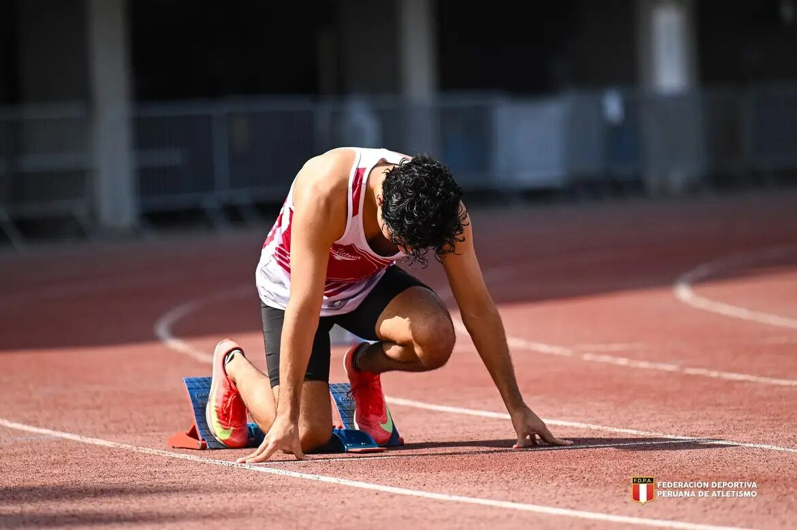
Así se ve una sesión de trabajo en la pista.
La publicación de la Federación Peruana de Atletismo y una entrevista con un medio deportivo.
Mi club desde 2020, con mi entrenadora Patricia Martínez Pinto.
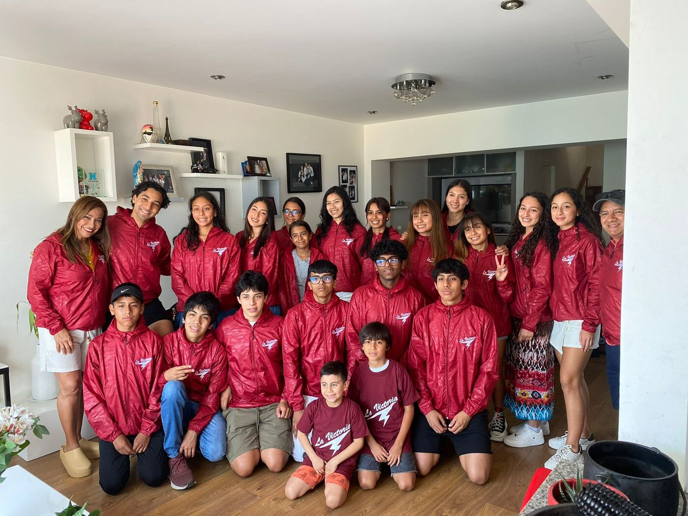

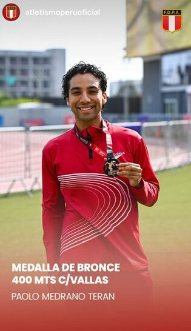
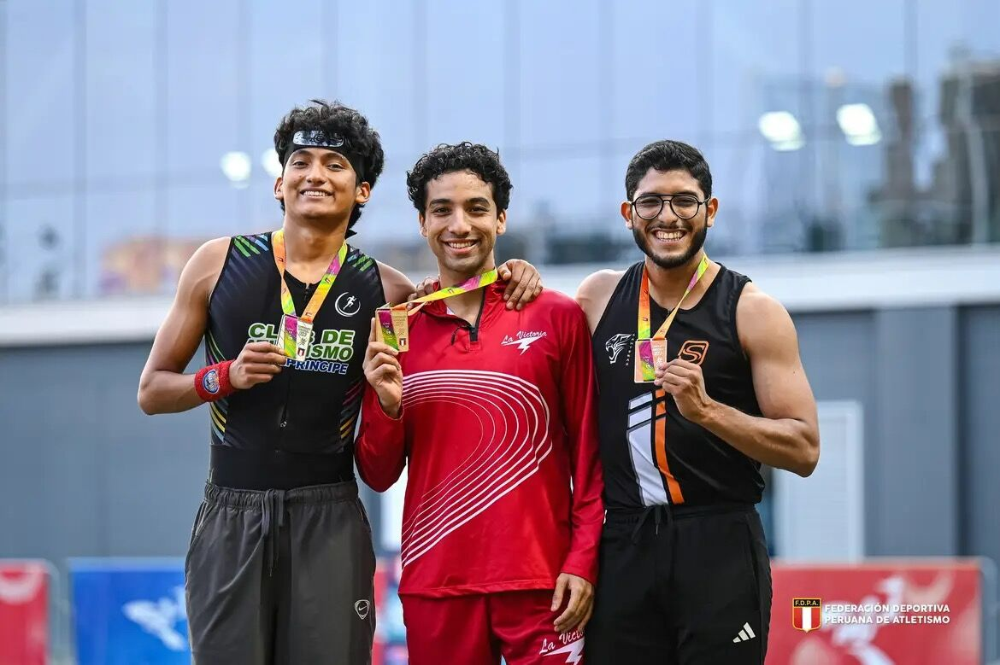
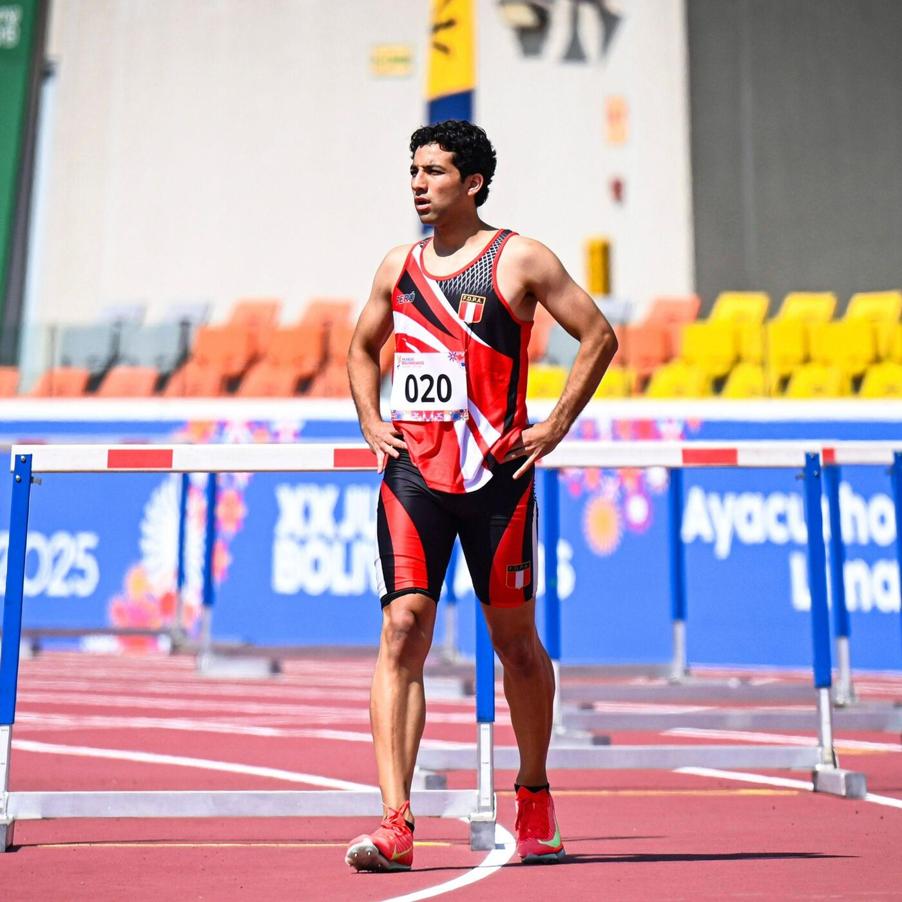
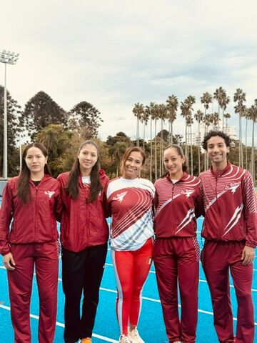
Parte 3
De UTEC a mi primera experiencia laboral en Hochschild Mining.

Ingresé en 2022, estoy en el octavo ciclo y egreso en 2027.
En 2024 recibí el reconocimiento UTEC Honors a la excelencia extraacadémica, en la categoría deporte.
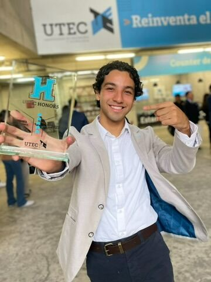
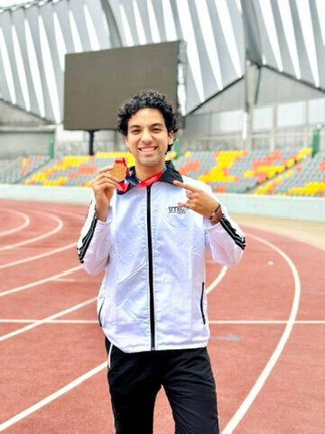
Todo lo que he hecho desde que entré a la universidad.
Aplicación web de salud mental con IA que evalúa el estado emocional del usuario y le da recomendaciones personalizadas.
Base de datos relacional en PostgreSQL para gestionar inventario y ventas, desde el modelo entidad relación hasta la implementación en SQL.
0%
de mejora en la eficiencia de las consultas, con índices B-tree y Hash.
Coordiné las listas de partida y fui el enlace entre la gerencia deportiva y el equipo de transmisión de World Athletics. También supervisé las ceremonias y premiaciones.


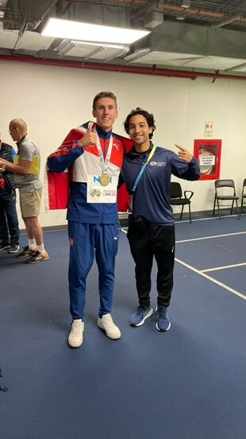
Organicé al equipo Computech en las competencias deportivas e institucionales. Ganamos dos ediciones seguidas.

Coordiné sesiones y eventos para estudiantes de intercambio y manejé las redes de la organización.
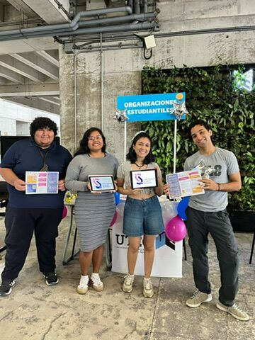

En un viaje a Estados Unidos visité el IBM Research Center. Fue mi primer contacto de cerca con la tecnología a ese nivel, y desde entonces una de mis metas es trabajar algún día en un lugar así.

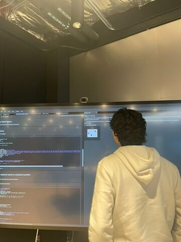
Entré a través de Bumerang para cumplir el curso de RLE. En el proceso de selección competí con postulantes que ya tenían experiencia laboral; yo era el único que nunca había trabajado.
Hoy veo los temas de tecnología de Gestión Humana y apoyo directamente a la gerencia corporativa. Mi trabajo incluye:
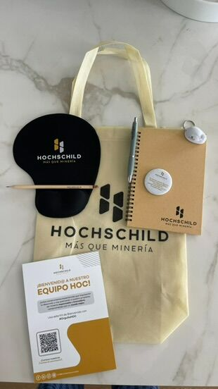
Nivel de dominio estimado, de 0 a 100.
Habilidades blandas: liderazgo, trabajo en equipo, comunicación, gestión del tiempo, pensamiento analítico, resolución de problemas, adaptabilidad y disciplina.
Estudiar, entrenar y trabajar al mismo tiempo no siempre es fácil, pero cada parte me ayuda con las otras: la disciplina de la pista me ordena en el trabajo, y lo que aprendo con los datos lo uso para entrenar mejor. Mi familia sostiene todo lo demás.
Gracias por llegar hasta aquí.

Hecho con D3.js. Música: Dance No More, de Harry Styles.